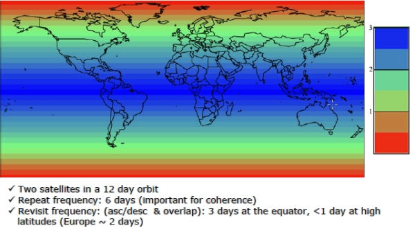
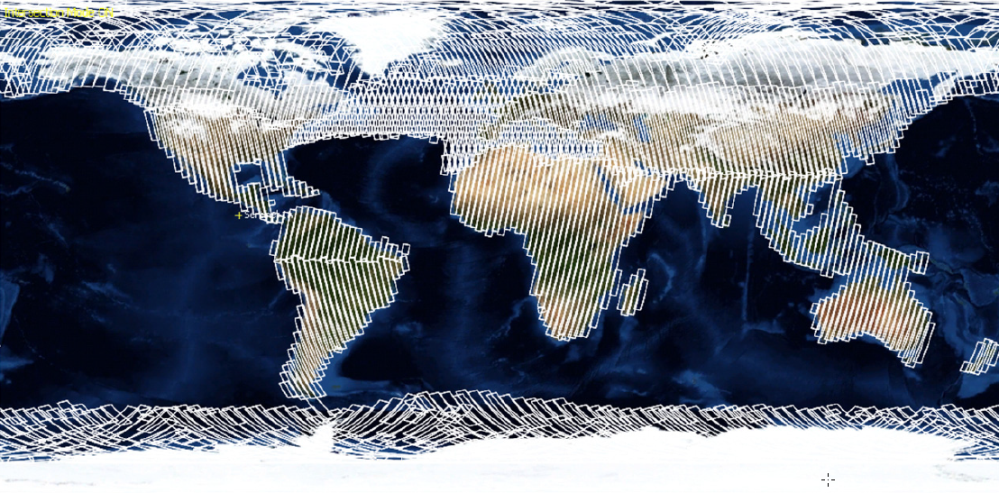
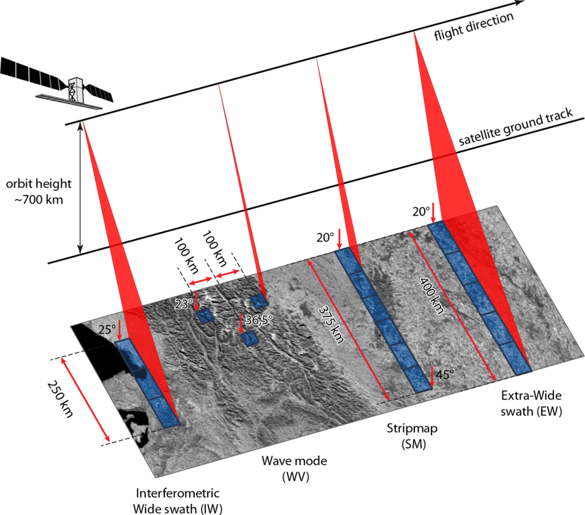

6 Adquisición de Datos
La misión Sentinel-1 es el Observatorio Radar Europeo de la iniciativa conjunta Copernicus de la Comisión Europea (CE) y la Agencia Espacial Europea (ESA). Copernicus es una iniciativa europea para la puesta en marcha de servicios de información relacionados con el medio ambiente y la seguridad. Se basa en los datos de observación recibidos de los satélites de observación de la Tierra y la información terrestre.
La misión Sentinel-1 incluye imágenes en banda C que operan en cuatro modos de imagen exclusivos con diferente resolución (hasta 5 m) y cobertura (hasta 400 km). Ofrece capacidad de doble polarización, tiempos de revisita muy cortos y una rápida entrega de productos. Para cada observación, se dispone de mediciones precisas de la posición y la actitud de la nave espacial.
El radar de apertura sintética (SAR) tiene la ventaja de operar en longitudes de onda que no se ven obstaculizadas por la nubosidad o la falta de iluminación, y puede adquirir datos sobre un lugar durante el día o la noche en todas las condiciones meteorológicas. Sentinel-1, con su instrumento C-SAR, puede ofrecer una vigilancia fiable y repetida de una zona amplia.
La misión está compuesta por una constelación de dos satélites, Sentinel-1A y Sentinel-1B, que comparten el mismo plano orbital.
Sentinel-1 está diseñado para trabajar en un modo de operación preprogramado y libre de conflictos, obteniendo imágenes de todas las masas terrestres mundiales, zonas costeras y rutas marítimas en alta resolución y cubriendo el océano mundial con viñetas. Esto garantiza la fiabilidad del servicio requerida por los servicios operativos y un archivo de datos consistente a largo plazo construido para aplicaciones basadas en series temporales largas.
6.1 Resolución Temporal Sentinel-1
Un solo satélite Sentinel-1 podrá cartografiar el mundo entero una vez cada 12 días. La constelación de dos satélites ofrece un ciclo de repetición exacta de 6 días. La constelación tendrá una frecuencia de repetición (ascendente/descendente) de 3 días en el ecuador, menos de 1 día en el Ártico y se espera que proporcione cobertura sobre Europa, Canadá y las principales rutas marítimas en 1-3 días Figure 6.1, independientemente de las condiciones meteorológicas. Los datos del radar se entregarán a los servicios de Copernicus una hora después de su adquisición.

Sentinel-1 se encuentra en una órbita casi polar, sincrónica al sol, con un ciclo de repetición de 12 días y 175 órbitas por ciclo para un solo satélite. Tanto Sentinel-1A como Sentinel-1B comparten el mismo plano orbital con una diferencia de fase orbital de 180°. La cobertura geográfica es la que describe en la siguiente imagen Figure 6.2:

6.2 Intrumentos a Bordo Sentinel-1
Sentinel-1 lleva un único instrumento de radar de apertura sintética en banda C que opera a una frecuencia central de 5,405 GHz. Incluye una antena activa phased array de orientación derecha que proporciona un rápido escaneo en elevación y azimut, una capacidad de almacenamiento de datos de 1 410 Gb y una capacidad de enlace descendente en banda X de 520 Mbit/s.
El instrumento C-SAR soporta el funcionamiento en polarización dual (HH+HV, VV+VH) implementado a través de una cadena de transmisión (conmutable a H o V) y dos cadenas de recepción paralelas para la polarización H y V. Los datos de doble polarización son útiles para la clasificación de la cubierta terrestre y las aplicaciones del hielo marino.
Sentinel-1 funciona en cuatro modos de adquisición exclusivos Figure 6.3:

- Modo Stripmap (SM) {#sm}:
- El modo de imagen Stripmap se proporciona para la continuidad con las misiones ERS y Envisat. El modo Stripmap proporciona una cobertura con una resolución de 5 m por 5 m sobre una estrecha franja de 80 km. Se puede seleccionar una de las seis franjas de imágenes cambiando el ángulo de incidencia del haz y el ancho del haz de elevación.
- Modo de hilera ancha interferométrica (IW):
- El modo interferométrico de franja ancha (IW) permite combinar una gran anchura de franja (250 km) con una resolución geométrica moderada (5 m por 20 m). El modo IW toma imágenes de tres sub-bandas utilizando la Observación del Terreno con Escáneres Progresivos SAR (TOPSAR). Con la técnica TOPSAR, además de dirigir el haz en el rango como en SCANSAR, el haz también se dirige electrónicamente de atrás hacia adelante en la dirección acimut para cada ráfaga, evitando el festoneado y dando como resultado una imagen de mayor calidad. La interferometría está garantizada por un solapamiento suficiente del espectro Doppler (en el dominio acimutino) y del espectro del número de onda (en el dominio de la elevación). La técnica TOPSAR garantiza una calidad de imagen homogénea en toda la franja. El modo IW es el modo de adquisición por defecto sobre tierra.
- Modo de barrido extra ancho (EW)
- El modo de imagen de franja extra ancha está destinado a los servicios operativos marítimos, de hielo y de zonas polares en los que se requiere una amplia cobertura y tiempos de revisita cortos. El modo EW funciona de forma similar al modo IW, empleando una técnica TOPSAR que utiliza cinco sub-surcos en lugar de tres, lo que resulta en una resolución menor (20 m por 40 m). El modo EW también se puede utilizar para la interferometría como en el modo IW.
- Modo Onda (WV)
- El modo Wave del SENTINEL-1, junto con los modelos globales de olas oceánicas, puede ayudar a determinar la dirección, la longitud de onda y las alturas de las olas en los océanos abiertos. Las adquisiciones en el modo de onda se componen de imágenes de mapa de franjas de 20 km por 20 km, adquiridas alternativamente en dos ángulos de incidencia diferentes. Las imágenes de olas se adquieren cada 100 km, con imágenes en el mismo ángulo de incidencia separadas por 200 km.